Paper Reading: Efficient Multi-client Isolation Under Adversarial Programs
本篇论文是 Purdue university 和首尔国立大学合作研究的成果。论文主要针对了 multi-client 的云服务场景，提出了一种基于 SFI（Software Fault Isolation）的 in-enclave 的线程隔离机制，并进行了详尽的测试和对比分析。论文显示，在 micro-benchmark 下，作者们提出来的这个框架比多进程沙盒隔离机制性能优越 4.06 − 53.70×，而在真实应用场景下，该框架性能优越 0.02 ~ 21.18x。
Introduction
Intel SGX 可以对应用程序和数据提供强有力的保护，enclave 外部很难获取这些数据。但是 enclave 内的程序可能有 bug，甚至有可能是别有用心的人特殊设计来窃取数据的。
那么现有的一些对这种类型的用户数据保护的工作，比如 Ryoan，VC3，都没有提供在一个 enclave 内的隔离机制，都是多个 process 的隔离，这就带来很大的性能开销（page swaps，data redundancy & transferring）。
本文作者提出了一种 面向 multi-client 场景的 in-enclave 隔离方案 —— CHANCEL，主要有以下几点特性：
SecureLayer —— CHANCEL 的可信服务
提供 enclave 内的一些功能（文件系统、内存管理、），以此完全控制 enclave 内程序与外界的通讯，并对通信信道进行加密。
可读共享内存区域 —— 这一点对后面的测试很重要
MCSFI (Multi-Client Software Fault Isolation) —— enclave 内部的线程隔离机制
每个线程服务一个 client，且只可以访问 private 的内存区域和 enclave 内的一个只读共享区域。
目标场景
CHANCEL 面向的服务场景有 Private information retrieval，比如提供 health-care 建议的服务。这些服务通过用户的查询，结合一个共享的医疗健康数据库推断用户的健康信息等；比如 intrusion detection system，通过比较分析 packet 和预定义的 signature dictionary 来辨别木马等病毒。
现有工作及其问题
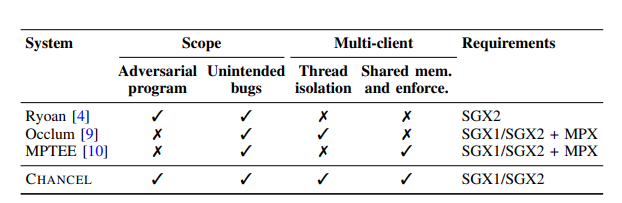
Ryoan 保护面有限，没有线程隔离（因为是多进程的隔离，这点也是本文主要比较对象之一，SGX下，多线程性能优于多进程）
硬件普适性不强，MPX 技术已经不再支持，而 SGX2 还没有落地。
没有针对 multi-client 场景进行隔离
Threat Model
CHANCEL 的威胁模型认为，service provider 可能故意窃取用户的数据；cloud provider 或者攻击者可能控制程序，但是程序的功能看起来是正常的。CHANCEL 的目的就是防止一个使用多线程来服务用户的远程程序泄露用户数据。
Design
Overview
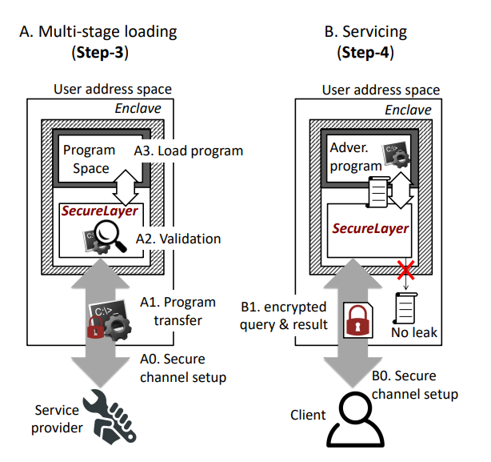
service provider 使用 CHANCEL 提供的工具进行编译插桩；在云上部署enclave环境并运行 SecureLayer；然后将 service program 上传到云上，SecureLayer 对上传的程序进行反汇编检查，确保符合安全要求；
当 SecureLayer 收到 client 请求时，会在可用的线程和 client 之间建立一个安全信道（比如通过 Diffie-Hellman 密钥交换）
MCSFI
Memory Layout
MCSFI 的内存分布除了 enclave 本身之外，还包括
- 每个线程分配一个专用的私有区域；
- 所有线程共享的只读区域（只有在初始化程序的时候是可写的）
- 额外的可执行区域（service）
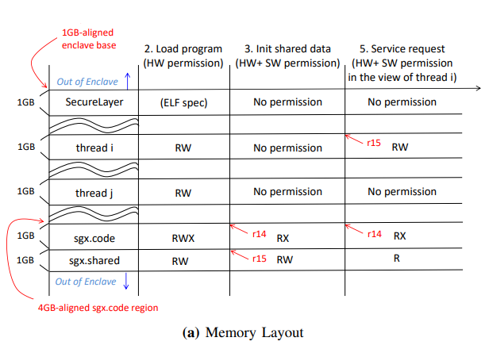
SecureLayer 的内存区域包含 attestation 和 validation 的程序和数据，用来正确加载程序；thread i 内存区域是专属于 thread i 的；sgx.code 是目标程序的内存区域；sgx.shared 是所有线程共享的内存区域。
MCSFI 要求在编译时期就为线程预留好空间，这个和 SGX1 的设计类似（SGX1要求确定最大线程数，只允许静态分配的内存）。
权限控制
- 在加载 service 之前，enclave 内只有硬件权限，即 enclave 内基本上都是可读可写的，所以 SecureLayer 可以在 sgx.code 安装程序
- 在安装完 service 之后，sgx.code 区域就没有写权限了，这个是由 MCSFI 保证的，此时可以对 sgx.shared 区域进行初始化
- 在初始化完成后，sgx.shared 区域会变成只读的区域，这个主要也是由 MCSFI 保证的
Compiler instrumentation
首先，CHANCEL 预留了2个通用寄存器，r14 和 r15。r14 保存着 sgx.code 的基地址；而 r15 在初始化 sgx.shared 区域前，保存着 sgx.shared 的基地址，在初始化完成后保存对应 thread 的私有区域基地址。
利用这两个寄存器，一条 load 指令就会被改成 一串指令。首先判断 load 的地址是否大于 r14，如果大于，则访问的是 sgx.shared 内的区域；否则访问的是 thread private 的区域。
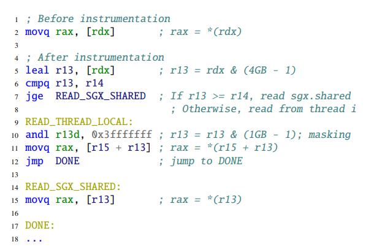
如果访问的是 sgx.shared 区域，就可以直接访问；而如果是访问的 thread private 区域，就会将目标地址和 (1GB - 1) 做一个masking，然后再加上 r15 (thread private 区域基地址) :question: 为什么 line 5. 要将目标地址 & (4GB - 1)
store 指令的处理类似，但是因为只有 thread private 区域是可读，所以直接和 (1GB - 1) 做一个 masking 即可。
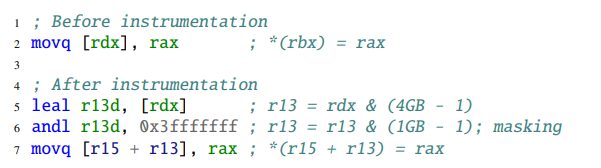
显然，如果要对所有的 load/store 指令都做插桩，性能开销会比较大，而其实有很多内存访问都是基于栈的，因此，CHANCEL 将每个线程的 rsp 放在私有区域内。这样访问的时候就不需要进行插桩修改指令。:question: 这里为什么 rsp 是和 (4GB - 1) 做 masking
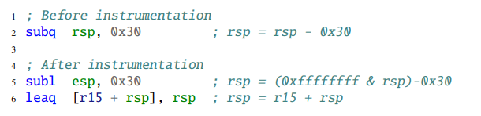
为了防止程序跳过 instrumentation，CHANCEL 确保所有的跳转目标地址都是 32 bytes 对齐的（通过插入 nop），因此，一个跳转指令会被修改成下面这样：
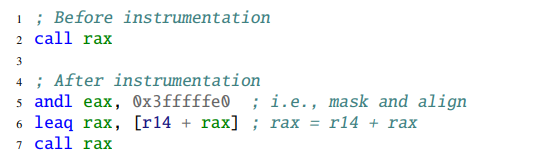
Shared Data Initialization
CHANCEL 的编译器提供了一个注解属性，可以通过注解 annotate(“sgx.shared”) 来共享一个全局变量。在加载程序的时候，CHANCEL 会将这个全局变量拷贝到 sgx.shared 区域。
此外，CHANCEL 可以在 sgx.shared 区域为程序提供需要的文件。
Full Mediation
CHANCEL 全程参与 client 和 thread 之间的通信，并确保每一个和外界的通信都被加密。此外，CHANCEL 提供了 in-enclave filesystem service 和 dynamic memory allocation。
Evaluation
测试环境
- 4核8线程 Intel i7-6700K CPU
- 64MB内存，128MB EPC
分为三个部分的测试：1. 和 multi-process 沙盒机制比较性能，主要和 Ryoan 进行比较；2. 测试 CHANCEL 的性能开销；3. 运行真实的程序，并和 Native 的 SGX 及 multi-process 沙盒 进行比较
Compared to multi-process sandbox
由于 Ryoan 使用了 SGX2 的硬件技术并且采用的是 QEMU 模拟的系统，所以作者采用的 multi-process sandbox 是 CHANCEL-MP —— CHANCEL 的一种变体，利用多进程隔离 clients。（CHANCEL-MP 和 Ryoan的差别就在于隔离机制不同，CHANCEL的 SFI 隔离机制性能优于 Ryoan）
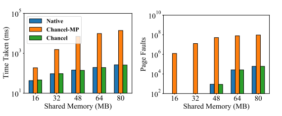
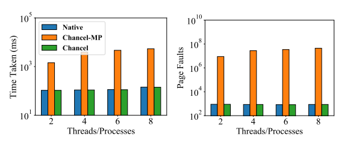
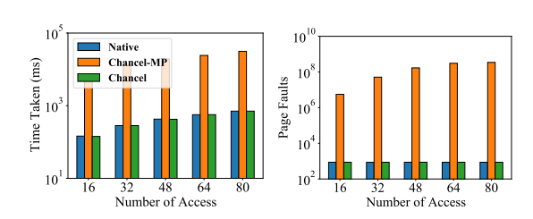
测试过程 —— 分配 $m$ MB 内存，$n$ 个线程连续访问其中的 512 KB区域的 8 字节 $k$ 次
测试结果 —— CHANCEL 比 CHANCEL-MP 性能优越 4.06x ~ 53.70x
Overhead of CHANCEL
使用 nbench 在普通环境（non-enclave）进行测试，这样可以避免 EPC 换页导致的额外开销，从而测试 CHANCEL 的真实开销
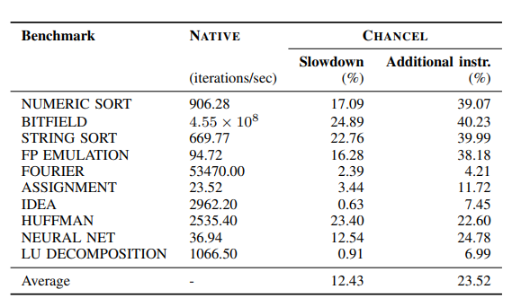
测试结果 —— 性能开销大概在 0.91% ~ 24.89%，平均大概为 12.43%
测试分析
- 对于 memory-intensice 的程序来说，性能开销会比较大，比如 NUMERIC SORT，STRING SORT；对于 cpu-intensice 的程序来说，性能开销比较小，比如 IDEA
- data access 是性能开销的关键原因
- 保留了 r14, 415，所以寄存器分配时，spill 会增加
- instrumentation 带来了额外的指令
Real-world Programs
针对真实程序的测试分别使用 4 线程 和 8线程，共享内存大小分为 18MB，36MB，72MB（light workloads），144MB，288MB，576MB（heavy workloads）。
OSSEC
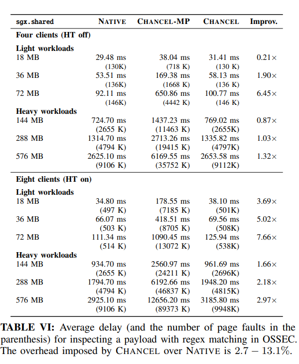
使用 ClamAV 的病毒库，逐步增加库大小（从18MB 到 576MB），CHANCEL 性能优于 CHANCEL-MP 0.21x~ 7.66x。在 light workloads下，Native 和 CHANCEL 的 Page Faults比较少，因此运行时间和字典大小增加几乎是成比例的，而 heavy workloads 虽然CHANCEL 性能影响也很大， 但是相比于 CHANCEL-MP，随着内存的增加，性能优越性更好。
DrugBank
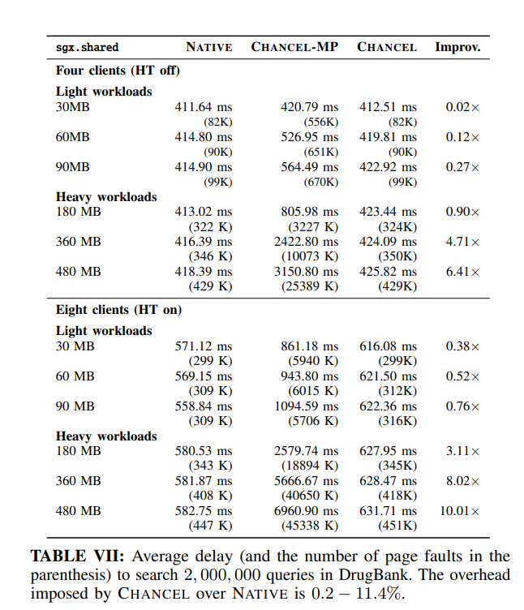
在 light workload 下，CHANCEl 的性能优越性不是很明显，主要是因为 在 light workload 下，每次 hashing 取得的 working set 比较小，所以 page swap 不是很大。相应的，在 heavy workload 下，CHANCEL 性能明显优于 CHANCEL-MP。
Recommender
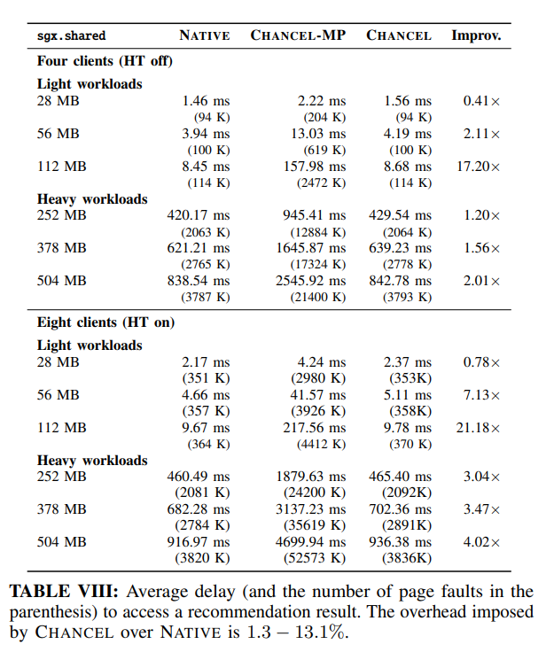
recommender 的情况和 OSSEC 类似，在 light workload 下，Native 和 CHANCEL 的完成时间随着共享内存的增加而增加，这是由于，recommender 的工作集取决于 catalog 大小（共享内存）
ShieldStore
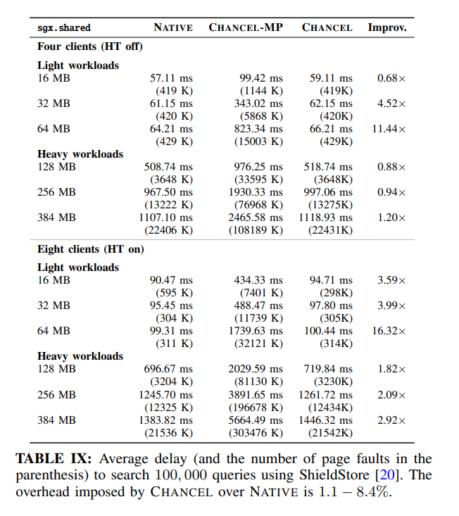
测试的结果和 OSSEC 及 Recommender 类似
Snort
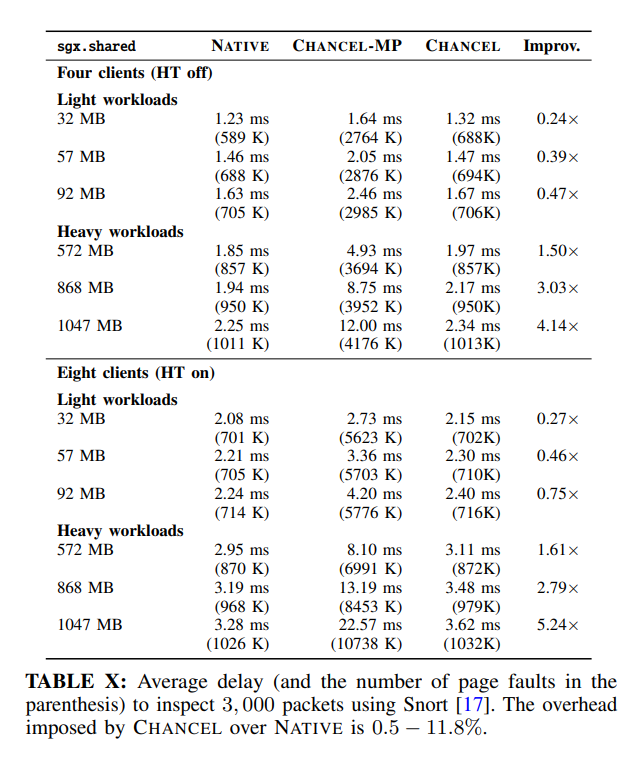
测试结果和 DrugBank 类似，在 light workload 下性能优越性不明显（由于 working set 比较小），而在 heavy workload 下性能优越性明显增强。
测试总结
CHANCEL 性能比 CHANCEL-MP 优越 0.02x ~ 21.18x，相比于 Native，仅仅导致了 0.2~ 13.1% 的性能开销。